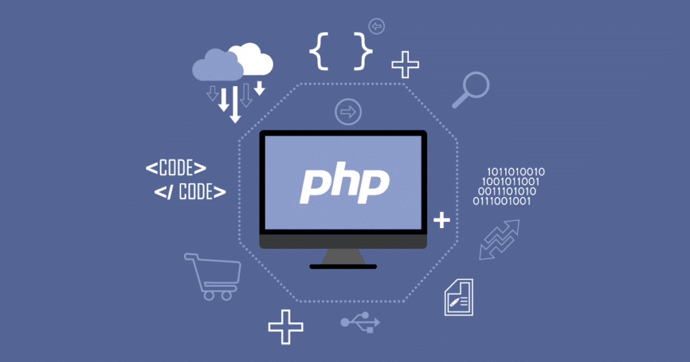

Php Nedir Neler Yapılabilir?
Php Nedir?
Php açılımı gereği Hypertext Preprocessor manasına gelen ve geniş bir kitlesi bulunan web programlama dilidir. Bu dili kullanarak Html kodunun içerisinde birtakım değişiklikler yapabilirsiniz. Bu değişikliklere imkan vermesi nedeniyle Php bir betik dili olmayı başarmıştır. Bu kısa tanımı yaptıktan sonra dilerseniz Php kodlarıyla bir örnek yapalım.
Php Örneği
< head >
< title >Merhaba dünya
< meta charset= ”utf-8” >
< body>
< /body>
< /html>
Yukarıda belirtilen kodların çalışabilmesi için dosya uzantısının “.php” olması gereklidir. Aynı zamanda Php dilinin bir backend dili olması nedeniyle çalıştırılması istenilen dosyanın sunucuda olması gereklidir aksi takdirde yazdığınız kodlar tarayıcı tarafından yorumlanmayacaktır. Şayet bir sunucunuz veya sunucu hizmeti aldığınız bir firma yoksa bilgisayarınızı sunucuya çevirebilirsiniz. Bunun için wamp ve appserv gibi programlar bulunmaktadır. Bu programları bilgisayarınıza indirerek Php kodları yazabilirsiniz. Ayrıca yukarıda belirtilen örneği kısa bir açıklama gerekirse Php kodları “” etiketiyle bitmektedir. Daha sonra ekrana bir yazı yazdırmak için echo fonksiyonunu kullandık. Bu fonksiyonu yazdıktan sonra çift tırnak içerisine ekrana basılmasını istediğimiz metni yerleştirdik. Bu örnekten çıkarımla yukarıda da belirttiğimiz üzere Php html kodlarının içine gömülebilmektedir. Buda onun Perl veya C gibi dillerden farklı yapıda olduğunun bir göstergesidir.

PHP ile Neler Yapılabilir?
Sunucu taraflı programlamaya odaklı olan Php ile her şeyi yapabilirsiniz. Formdan veri toplama, çerez işlemlerini oluşturma, sayfa içeriğini yapma bu işlemlerden birkaçıdır. Bunun haricinde Php ile birçok şey yapılabilir.
Yukarıda belirttiğim örnekten Php’nin yalnızca Html çıktıları üretebildiğini düşünmüş olabilirsiniz. Fakat durum böyle değildir. Yani Php Html çıktısıyla üretmekle sınırlı değildir. Dilin resim çıktısı üretebilmesi ve pdf oluşturabilmesi onun diğer yapabildiklerindedir. Depo sistemini bu dilde kullanarak da dosyalarınızı saklayabilirsiniz.
Php kullanılarak yapılan birçok sistem vardır. WordPress ve Joomla bunların en gelişmişlerdendir. Bunun yanı sıra Php kullanılarak birçok sosyal medya platformu geliştirilmiştir ki bu dil vasıtasıyla geliştirilmeye devam ediyor. Facebook, Instagram, Twitter bu platformlardan sadece bir kaçıdır. Bunların yanı sıra web tabanlı robotları oluşturmada da Php dilinden yararlanılmaktadır.
Sunucu tarafından programlama yapabilmeniz için bir adet Php çözümleyicisine, bir adet HTTP sunucuna ve bir adet de tarayıcıya ihtiyacınız vardır. Bu ihtiyaçları karşıladıktan sonra web üzerinden uygulamaya yapmaya başlayabilirsiniz. Üstelik Php bütün işletim sistemlerinde çalışabilir bir durumdadır. Bu özelliğiyle dil kullanımını ve tercih edilme oranını her geçen gün artırmaktadır. Aynı zamanda Php HTTP sunucularının da birçoğunu destekler. Apache ve ISS bunlara örnek gösterilebilir. Ayrıca FastCGI ve Lighttpd ve Ngix sunucularında da Php desteği bulunmaktadır.

PHP’nin Yararları
Açık kaynak kodlu bir dil olduğundan dolayı Php gelişimini sürekli olarak sürdürmektedir.
Php Linux tabanlıdır fakat Linux tabanlı olması onun farklı sunucularda kullanılmamasına engel olmamıştır.
Sanal sunucu yardımıyla Php tüm sunucularda kolaylıkla çalıştırılabilir.
Kullanımı yaygın olduğundan ve gelişimi devam ettiğinden dolayı dili öğrenmek isteyenler kaynak sıkıntısı çekmez.
Çok hızlı çalışan bir programlama dilidir.
Performans açısından ve güvenlik açısından oldukça gelişmiştir.
PHP Veri Tabanı Desteği
Günümüzde Php dilinin bu kadar popüler olmasındaki başlıca sebep olarak geniş veritabanı desteğinin olması gösterilebilir. Yani PDO gibi yapılarla veritabanı bağlantılı web siteleri oluşturabilirsiniz. Üstelik bu işlem oldukça basittir. Bunun yanı sıra Php kod yazanların içli dışlı olduğu veri tabanı MySQL’dir. Nasıl ki Asp.net denilince veritabanı yönetim sistemi olarak akla Windows Server geliyorsa Php denilince de MySQL gelmektedir. Ayrıca farklı veritabanlarına bağlanabilmeniz için Php sizlere kolaylıklar sağlamaktadır. cURL eklentisi ve soketler yardımıyla bu işlemi kolaylıkla yapabilirsiniz.